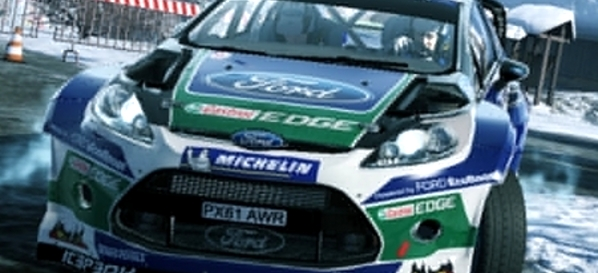

Night and the City
Chris Donlan plays through L.A. Noire with his dad, who grew up in the city in the 1940s.
Today, I'm going to tell you about the time my grandfather shot a man in the ass.
The year was 1949. The place was downtown Los Angeles. The occasion was a robbery with violence. A small store, I think: a tailor's, or maybe a family-run grocery market? History has not recorded all of the details.
It's recorded some of the details, though. "The guy was getting away," my dad explained to me the other day. "He was running fast and he'd pulled a gun. In those days, in that city, when somebody pulled a gun on a cop, the cop had to pull a gun in return. The objective back then was that you had to shoot to kill. You never shot to wound." Dad paused. Blinked. "But dad wouldn't have been able to live with himself if he'd killed anybody. So dad shot this guy in the ass. He meant to shoot them in the ankle, I figure - nobody plans to shoot a guy in the ass. But he wasn't as good a shot as he thought he was."
Case closed, Donlan style. It was the only time my grandfather ever used his gun - and that's just one of the things I learned playing L.A. Noire with my dad a few weeks back.
I don't often play video games with dad. He hates games, actually, or at least that's the schtick. In his mind, they're just violence and noise, and they're all variations on Call of Duty multiplayer. "I don't like the opportunities that video games present for reclusive men," he likes to say, just before he asks - for the fiftieth time - why I decided to grow a beard.
The reason I wanted to play L.A. Noire with my game-hating, beard-doubting dad, though, wasn't just to show him how different games could be to the vision of them that he had in his head. It was also because I'd heard a lot about how authentic this particular game's atmosphere was, and I wondered what somebody who grew up in L.A. in the 1940s would make of it. Rockstar's open-world police procedural is set in 1947. Dad was born in 1943, and he spent his early years in Crenshaw, a district in the south-west of the city. (It's close to where the body of the Black Dahlia was found.) Best of all, his dad was a beat cop - a beat cop who, as we've already discovered, once shot a guilty man in the ass. The game world was the world of dad's childhood, then. Would he recognise it?
The cars are beautifully rendered, but do they have the right engine sounds?
Actually, and forgive a meandering aside, my grandfather was very briefly a semi-famous beat cop. In November, 1944, he caught a serial killer - okay, technically a spree killer - because he'd glimpsed his face while out on his patrol one morning, and then seen a mugshot of the guy back at the station. My grandfather - his name was Harry Edward Donlan, which isn't a bad name for a cop - had a freakishly good visual memory: he'd glance at somebody and then they were locked in his mind forever. When the killer's details were wired back to HQ, my grandfather told his lieutenant that he'd spotted the perp in a bar at Third and Hill, and could go and bag him right there and then - an easy win for the LAPD. The lieutenant assumed Sergeant Donlan was trying to knock off early to meet some floozy (grandpa had two non-grandma ladies on the go at the time: one named Peaches Puccivinelli, and another called Bubbles Bochivinski) so he quietly suggested that, if it was such a big deal, it could probably wait until lunchbreak came around.
Sergeant Donlan waited until his lunchbreak, and then he went back to the bar and brought the guy in. It was the killer all right, a fry cook named Otto Stephen Wilson. Sure, my grandfather didn't do any of the investigation work, but he caught the guy drinking beer with a woman who would probably have become his third victim. "He used to dismember them and cannibalise them!" dad told me, cheerfully. Papers around the US ran the story, and one of them just printed a shot of my grandfather's striking, rather stern face, staring straight at the camera. The paper called him Sergeant Harry "Deadeye" Donlan: The Cop With The Eyes That Never Forget. The case gets a fleeting mention in James Ellroy's novel Silent Terror, too. True story.
Harry became a cop because he was canny but deeply untrusting - 'watchful' is the word my dad generally uses - and he had a subconscious need to be close to conflict. There was something dark at the secret centre of his personality; he was the kind of person who would wake up every morning and march up the side of a mountain just to pick a fight with rocks. The same was true of his two brothers, both of whom were also cops at one time or another. All three were, in their own little ways, criminals as well as police officers, mind you.
My great uncle Joe was a sharpshooter, for example, who was brought to L.A. because he could stand on the running board of a moving car and blast the rear-view mirror out of another moving car - I like to think that the people in the second car would be bank robbers rather than day-trippers, but with my family you can never be entirely sure. Joe left the force in semi-disgrace after trying to blackmail a city official using what was always referred to in our house as "a home-made honey trap". I always pictured something with springs and dials and a little glass vial filled with bees, but I think he just hid in a motel wardrobe and popped out at an embarrassing moment. Surprise! It says a lot about the LAPD in the 1940s that a uniformed policeman being caught blackmailing people only led to semi-disgrace.
Harry? Harry wasn't a blackmailer or anything like that, but, as my dad once said, "We did get a lot of bottles of whisky at Christmas." Sergeant Donlan didn't turn a blind eye to anything serious, but he would overlook small-scale stuff like parking violations and zoning infringements: he was getting in with his neighbours. "As police went at the time," admitted his son, begrudgingly, "he was probably one of the better ones."
Harry E. Donlan in the 1940s.
This isn't quite as irrelevant and self-indulgent as it seems (although, sorry, it is largely irrelevant and self-indulgent). See, one of the things I like about L.A. Noire is how it captures this double nature of the LAPD: the fact that, although they're chasing down perps and getting in wonky fist fights with swarthy men wearing rakish hats, you can never quite decide whether you're siding with the good guys or not. Those "Hey! Join the Police Already!" advertisements you pass on the side of buildings as you head deeper into virtual Downtown can seem quietly sinister, quietly fascist. To use the parlance of the times, there's something a little off about them - and there's something a little off about the wider force, too. When I was a kid, I always assumed my grandfather was a hero - not least, most likely, because he would regularly tell me he was. When I got older, when I read James Ellroy and - even more damningly - Walter Mosley, I thought: "Ah." I thought: "Hmmm."
There's a lot of ah and hmmm in L.A. Noire, but ambiguity's not the game's only strength. Another is the environment: miles of beautiful Angeleno real estate enjoying the quiet years before the Bonaventure landed. One of the reasons why dad and I spent an entire afternoon playing the game without even cracking the spine on Cole Phelps' notebook, in fact, was because dad was in a nostalgic mood. We had a sweet car - a brand new '47 Ford with a V8 sound effect incorrectly applied to a six cylinder engine - and he really wanted to tool around for a bit, griping about the the wrong gear ratio noises, and hopefully finding the Richfield Tower.
Built by the Richfield Oil company in 1929, the tower was a glorious, gaudy, and yet somehow serious thing. Its black marble and gold leaf exterior hinted at the nature of the geysering fortune that built it, while a weird flattened spire stuck on top served as a reminder that, even as America lurched into the depression, it was willing to spend considerable amounts of cash on follies, just so long as they looked cool enough in the publicity pictures.
The Richfield Tower, now the site of the Arco Towers.
In the publicity pictures, the Richfield Tower looks like a cross between Liberace's refrigerator and an over-engineered art deco tombstone, in fact. It was torn down in 1969, and my dad hadn't seen it since 1961 when he left L.A. to become a priest. I wasn't expecting to see it in the game, because I'd never heard anyone but him ever talking about it. I told dad we'd look for it, but I wasn't optimistic.
I'll never forget the moment we found it. Dad could just about remember the cross-streets - 6th and Flower - and I had a little trouble fiddling round in the game's map to set a waypoint. Then we were off. On the drive, dad kept up a low-level muttering trail of recollections and fiercely specific critiques: the lamps on this bridge were right, but the large dumpsters in alleyways weren't like anything he remembered seeing; a gas station's Coke machine was just perfect, but little skirtings of exposed brickwork around the low walls of vacant lots 'didn't seem very Californian'; this was meant to be 1947? Why was that a 1950 Chevy, then? When we finally turned onto 6th, though, he suddenly stopped talking.
Like any son with a father in his late 60s, I assumed his sudden silence meant he was having a minor cardiac event. He wasn't, however: he was simply back in the presence of a building he hadn't seen in half a century.
We got out of the car and circled the mass of black marble. Dad didn't say much for a minute or so, but I was astonished that this forgotten edifice had made the cut in Rockstar's highly compressed take on Los Angeles. As landmarks go, it was long gone in real life, and in California, long gone generally means it's also forgotten. It was never a world-famous edifice, like the bleached white sepulchre of City Hall that dwarfs the surrounding area in the game (in 2012, however, it looks quaint, cruelly hemmed in by glass and steel megastructures), and it wasn't particularly chic, like the Public Library, the pyramid spire of which you can see briefly in the game's opening credits. It's the kind of building that wouldn't really be missed, and yet here it was, and dad was visibly shaken.
We drove about for another hour or two after that, and by this point dad was hooked. Not hooked on L.A. Noire's narrative, perhaps, or caught up in the complex chains of missions, but hooked on the city, on the fascinating, insightful job that Rockstar had done in stitching the past together. Even though I can't actually drive, and the car we were in wasn't a real car anyway, I had a strong sense that I was in the front seat, turning the wheel beneath my hands, and he was riding low in the back, face pressed to the glass. Role reversal. It happens to all fathers and sons eventually, I guess. Why shouldn't it happen because of games?
We're a family of family stories, and I thought L.A. Noire would trigger more of that kind of stuff. In the end, however, the whole experience was actually far more affecting, I think, and far more powerful, too. Dad just trailed off, really, lost in the texture of L.A. Noire, surfacing now and then to announce a car or a familiar sight. '40 Buick, '46 Olds, '39 Dodge. I remember that restaurant. Rialto? God, that place used to show all the old burlesque stuff. What's the name on that oil pump?
At one moment, as dawn was breaking on the road to Hollywood, he suddenly leaned forward and shouted out "Willies!" and I said a silent prayer of thanks that I had my stepmother's phone number on speed dial. It turned out he was actually saying, "Willys! You almost never see a Willys in old films! It's a lesser make. Not so popular. They did the Willys jeeps for the war, and after that they went broke."
So did my dad find L.A. Noire accurate? Intoxicatingly so, I suspect: he thought the streets were wider than he remembered, but he liked the way they were fairly dark, just like the underlit boulevards he knew when he was a kid. He liked the white painted boxes in the middle of the roads, where people would queue for the streetcars - even though he said that traffic used to slip around on the streetcar railings a lot more than they did in the game. The little details were the most affecting, though: the tyre-changing bay outside a gas station, or the wooden crate of bottles stacked next to a vending machine. The cop uniforms looked the way his dad's had when he left for work in the morning. The diners had the right kind of window displays and lettering.
And even when he felt a detail was wrong, or not quite the way he remembered things personally, the inaccuracy was often quietly instructive. "A policeman driving a brand new Chrysler Town and Country is pretty unrealistic," he said, seconds into the game's opening cinematic. "Working for the city, he could never afford it." Elsewhere, on a similar note, he baulked at the sheer number of cars tooling around the streets decked out in gleaming whitewalls. "In 1947, you almost never saw a whitewall," he said. "Whitewall tyres were much more expensive than regular tyres, and city cars wouldn't get them. No police cars had whitewalls at all, I think - they were purely for the most affluent. It was a real status thing, and they only became much more common later on. This is only just after the war, right? Whitewalls started coming in heavily around 1949, probably. Before then, they were, like, six bucks extra per tyre, and Los Angeles wasn't going to pay for them."
Lucky they didn't have many TVs in those days - the glare through the blinds would be infuriating.
I was surprised by that. When I try and picture the 1940s, every car that drives through my sickly imagination has whitewalls, and when you find out why they didn't, you actually end up learning something. It makes sense, I guess: you'd no more waste luxury on a cop car than you'd shoot a guy in the ass with a crystal bullet - and remember, my family knows a thing or two about shooting people in the ass. The point is that even the little details often open up the past in interesting ways, keying you into the class issues and the general hierarchy of the period. History is the big things, like the Richfield Tower, but it's the tiny things, as well, like the trimmings on your ride.
In truth, I was surprised by L.A. Noire, too. It's one of Rockstar's most interesting games, but it can also feel like one of its frostiest - a period piece so meticulously put together that there doesn't seem to be much room for the human element to fit in. Playing it with my dad made me realise that those very pains the team took to recreate the past is where the humanity of the whole production actually emerges, whether it's all the hundreds of insignificant things the team got right, or all the dozens of insignificant things they got wrong. I just needed someone to show it all to me. Someone, like a good beat cop, who knew the territory and could tell me what was what. Someone who could truly appreciate the achievement.
A couple of weeks after we got together to play L.A. Noire, I asked dad to send me a few thoughts on what he'd seen. I expected a sentence or two, or maybe even one of his ludicrously dense text messages, often composed of a single sentence, fractured into complex inter-locking clauses. Instead, I got a neat little Word document titled 'Virtual Return to Los Angeles'. Here's what he wrote:
"Viewing L.A. Noire was an exciting and thoughtful experience. For a few hours I was able to re-explore the L.A. I knew in the late forties and early fifties with my son. The city was dark, but even with the period's dim street lighting and within the slightly truncated map of the city, we were able to find our way around. The prizes for me were the Richfield Building, Angels Flight (located where it belonged next to the 3rd Street tunnel - it has since been relocated one block south) and the wonderful cars of the era. I was able to remember exactly how to get around from both the towering City Hall and the slightly uncomfortable space of Pershing Square. This seemed a refreshingly thoughtful-almost intellectual-scenario that I would not have expected in something called a game.
"The accuracy with which the city structures and roadways are recreated is really astounding, and the details were almost perfect! Minor faults would not be evident to most who did not live in the city at that time. For sure this was a real as well as a virtual return for me to that complex and dark city at that time.
"To be able to experience it again with my son who was born 20 years after I first left the city was, I think, wonderful for us both."
Sincere apologies to everyone I've bored with stories of my grandfather over the years. I think I'm finally ready to move on.
You may also like...
-
What if people don't like Jon Hare's first original game since Sensible Software?
"That's it. End of. Simple." 46
-
Obsidian's Project Eternity most funded video game ever on Kickstarter
UPDATE: Kickstarter ends at just under $4 million. 48
-

WRC 3 review
A new Loeb. 95